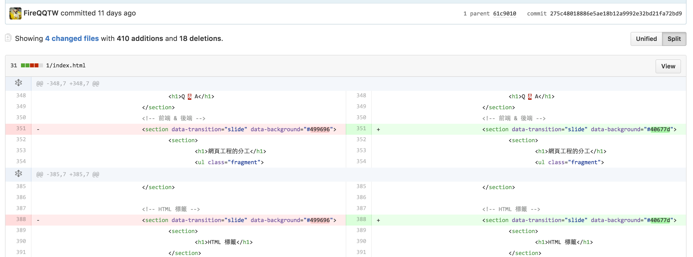
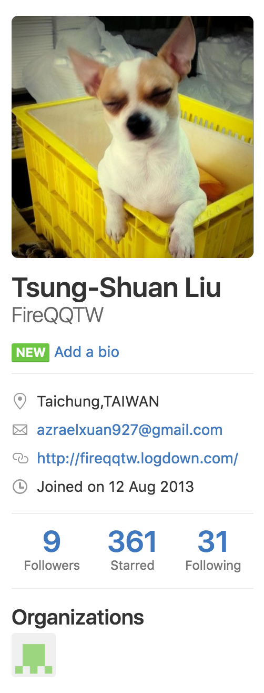
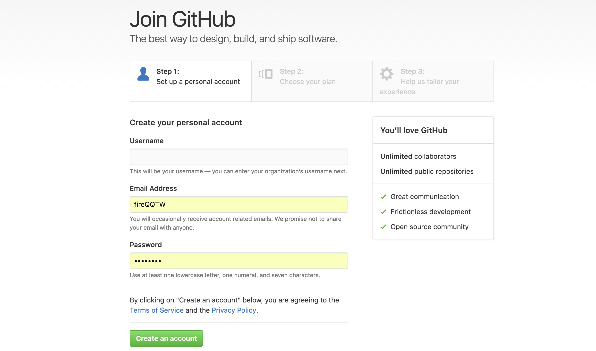
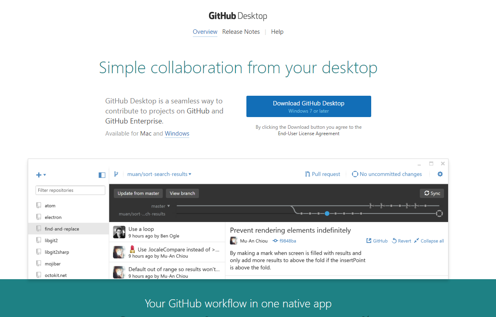
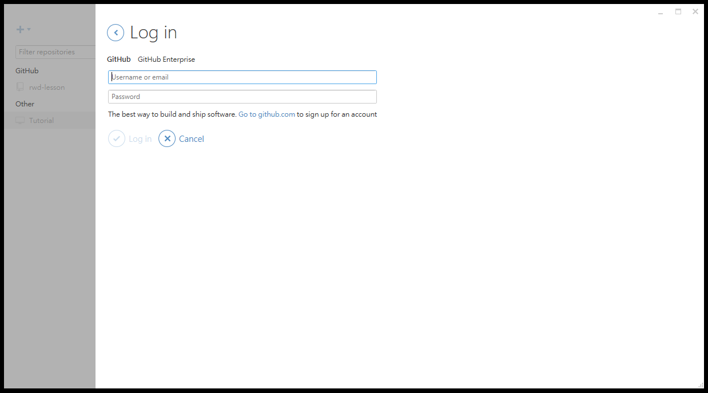
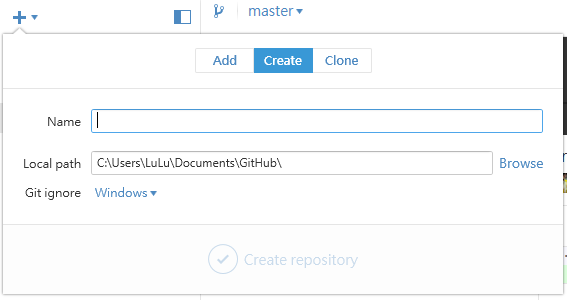
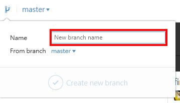
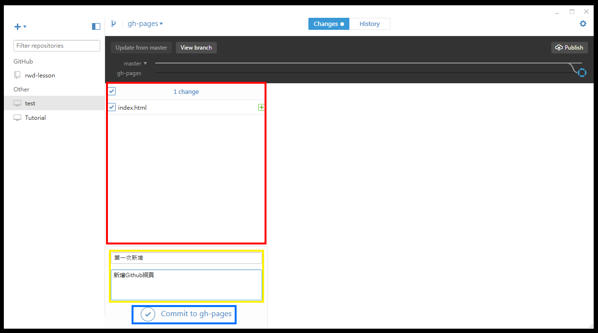
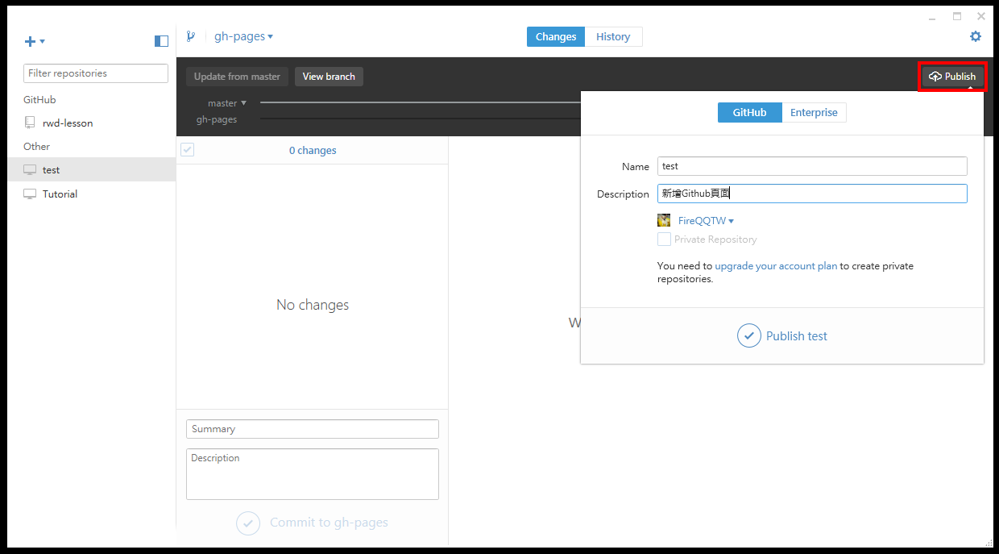
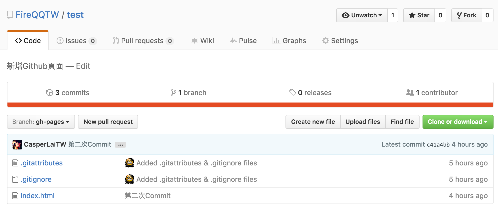

Github
代碼管理服務
Github Pages
專案上的個人網頁
Free (⊙０⊙) !??
是的，別懷疑。
適合...個人的自我介紹
建立 Github Pages
1. 註冊 Github 帳號
2. 下載 Desktop APP
3. 安裝並開啟 APP
安裝完成APP後，開啟桌面 Github 程式(範例系統:Win 7)，並登入 Github 帳號。
4. 建立/新增專案
連結你的專案，或直接建立新專案。
4. 建立分支(branch)
在 Githu pages 中，分支名稱為"gh-pages"的分支為專案網頁用，預設底下的index.html為預設網頁。
5. 打包修改(Commit)
在 紅框選擇要打包的檔案，在 黃框輸入這次打包的紀錄，按下藍框內的"Commit to gh-pages"記錄起來。(注意: 此時還沒上到 Github)
6. 更新至 Github
點選 Publish ，填妥訊息後，按下"publish 專案名稱"，將打包的程式碼送至 Github。
7. 檢查是否更新
到 Github 上檢查是否有新增/更新自己的專案
完成!!!!!!!!
等~一~下~~~!! 網址咧?
格式: https://{ 帳號 }.github.io/ { 專案名稱 } /
範例
- 我的帳號：FireQQTW
- 我的專案：rwd-lesson
Q&A
Bootstrap

受歡迎的、HTML、CSS、JS框架。
開始使用
1. 連結資源
2. 初始化 CSS
使用了 Normalize.css
3. 容器
- .container: 用於自適應且固定寬度的容器
- .container-fluid: 用於 100% 寬度的容器，橫跨可視區域的全部寬度